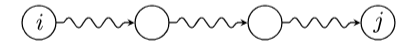
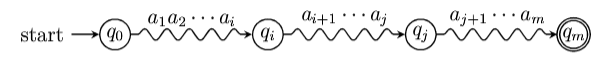
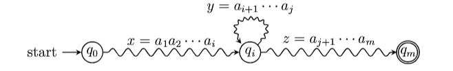
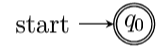

4. RE
1. 自动机与正则表达式
有穷自动机通过机器装置描述正则语言，而 RE 通过代数式描述正则语言，表达更为方便。
$\Sigma$ 上的正则表达式递归定义为：
① $\emptyset$ 是正则表达式，表示空语言；
② $\pmb{\varepsilon}$ 是正则表达式，表示语言 $\lbrace\varepsilon\rbrace$ (用黑体区分)；
③ $\forall a \in \Sigma$，$\mathbf{a}$ 是一个正则表达式，表示语言 $\lbrace a\rbrace$；
④ 如果正则表达式 $\mathbf{r}$ 和 $\mathbf{s}$ 分别表示语言 $\small R$ 和 $\small S$，那么 $\mathbf{r}+\mathbf{s},\ \mathbf{rs},\ \mathbf{r^*},\ (\mathbf{r}) $ 都是正则表达式，
分别表示语言 $\small R\cup S,\ R\cdot S,\ R^*$ 和 $\small R$。
符号的优先级为 $()>*>\cdot>+$.
(1). DFA $\to$ RE: 递归表达式法
定理：若 $\small L=\mathbf{L}(A)$ 是某 DFA $\small A$ 的语言，那么存在正则表达式 $\small R$ 满足 $\small L=\mathbf{L}(R)$。
首先对 DFA $\small A$ 的状态编号，有 $ A=(\lbrace 1,2,...,n\rbrace,\Sigma,\delta,1,F)$。再令正则表达式 $R_{ij}^{(k)}$ 从 $i$ 到 $j$ 但中间结点不超过 $k$ 的全部路径的字符串集。
$R_{ij}^{(k)}=\lbrace x\ |\ \hat{\delta}(i,x)=j,\ x$ 经过的状态除两端外都不超过 $k\rbrace$ 
那么与 $A$ 等价的正则表达式为 $\bigcup_{j\in F}R_{1j}^{(n)}$，且递归式为 $R_{ij}^{(k)}=R_{(ij)}^{(k-1)}+R_{ik}^{(k-1)}(R_{kk}^{(k-1)})^*R_{kj}^{(k-1)}$, 其中 $ R_{ij}^{(0)}=\begin{cases} \lbrace a\ |\ \delta (q_{i}, a)=q_{j}\rbrace & i \ne j \\ \lbrace a\ |\ \delta (q_{i}, a)=q_{j}\rbrace \cup\lbrace\varepsilon\rbrace & i=j \end{cases}. $
在求解的过程中通常需要化简，基本的化简原则有 $(\pmb{\varepsilon}+\mathbf{r})^*=(\pmb{\varepsilon}+\mathbf{r})\mathbf{r}^*=\mathbf{r}^*$、$\mathbf{r}+\mathbf{rs}^*=\mathbf{rs}^*$ 等。
(2). DFA $\to$ RE: Eliminating States
在 DFA 中逐个删除状态, 用标记了正则的新路径替换被删掉的路径, 并始终保持自动机等价。
① 利用空转移，添加新的开始状态 $s$ 和结束状态 $f$;
② 逐个消除中间状态，得到路径 $s\to f$ 上的表达式。
(3). RE $\to$ $\varepsilon$-NFA
任何正则表达式 $\mathbf{e}$，都存在与其等价的 $\varepsilon$-NFA $A$，即 $\small\mathbf{L}(\mathbf{e})=\mathbf{L}(A)$，且 $A$ 需要满足：
① 仅有一个接收状态；② 没有进入开始状态的边；③ 没有离开接收状态的边。
归纳基础：
归纳递推：
2. 正则表达式的代数定律
含有变量的两个正则表达式，如果以任意语言替换其变量，二者所表示的语言仍然相同，则称这两个正则表达式等价。在这样的意义下，正则表达式满足一些代数定律。
- 并：$\small (L+M)+N=L+(M+N),\ L+M=M+L,\ L+L=L,...$
- 连接：$\small (LM)N=L(MN),\ L\varepsilon=\varepsilon L=L,\ L\emptyset=\emptyset L=\emptyset,...$
- 分配律：$\small L(M+N)=LM+LN,\ (M+N)L=ML+NL$
- 闭包：$\small (L^*)^*=L^*,\ (\varepsilon+L)^*=L^*,...$
3. 正则语言的泵引理
以语言 $ L_{01}=\lbrace 0^n1^n\ |\ n\geq 0\rbrace$ 为例，由于 DFA 无法记忆读入字符的数量，该语言不是正则语言。泵引理就是用来证明某个语言非正则的一个工具。
Pumping Lemma: 如果语言 $L$ 是正则的，那么存在正整数 $N$，对 $\forall w\in L$，只要 $|w|\geq N$，就可以将 $w$ 分为三部分 $w=xyz$ 且满足：
① $y\ne\varepsilon\ (|y|>0)$; ② $|xy|\leq N$; ③ $\forall k \geq 0,\ xy^kz\in L$。
即正则语言的字符串一定可以通过泵出字符得到一个封闭的新串。
证明：
- 如果 $L$ 正则，那么存在一个 $n$ 状态的 DFA $\small A$ $\ \mathit{s.t.}\ $ $\mathbf{L}(A)=L$。
- 取 $w=a_1...a_m\in L\ (m\geq n)$，令 $q_i=\hat{\delta}(q_0,\ a_1...a_i)$，由抽屉原理，必有两状态满足 $q_i=q_j\ (0\leq i < j\leq n)$。 
- 那么 $w=xyz$ 如下图，且对于 $n$，$w$ 满足泵引理的三个条件。 
e.g. Prove following languages is not regular.
①. $L=\lbrace 0^i1^j\ |\ i>j\rbrace$; ② $L=\lbrace a^3b^nc^{n-3}\ |\ n\geq 3\rbrace$;
①. $\small w=0^{N+1}1^N,\ |w|=2N+1>N.\ y=0^m,\ xy^0z=0^{N+1-m}1^N\notin L$
②. $\small w=a^3b^Nc^{N-3}$，则 $y$ 可分为三种情况：
$\small\mathtt{(1)}. y=a^m,\ xy^2z=a^{3+m}b^Nc^{N-3}\notin L$
$\small\mathtt{(2)}. y=b^m,\ xy^2z=a^3b^{N+m}c^{N-3}\notin L$
$\small\mathtt{(3)}. y=a^rb^s,\ xy^2z=a^{3+r}b^{N+s}c^{N-3}\notin L$
泵引理的局限性在于它只是必要条件。以 $L=\lbrace ca^nb^n\ |\ n\geq 1\rbrace$ 为例，对于 $L$ 的任何串，都可划分为 $(\varepsilon)(c)(a^ib^i)$，因此它既满足泵引理，又不是正则语言。
4. 正则语言的封闭性
显然，正则语言在并、连接和闭包运算下封闭。
(1). 补运算
证明：设接收 $L$ 的 DFA 为 $\small A=(Q,\Sigma,\delta,q_0,F)$，构造 DFA $\small B=(Q,\Sigma,\delta,q_0,Q-F)$。
由 $\small w\in\overline{L}\Longleftrightarrow\hat{\delta}(q_0,w)\notin F\Longleftrightarrow\hat{\delta}(q_0,w)\in Q-F\Longleftrightarrow w\in \mathbf{L}(B)$, $\small L=\mathbf{L}(B)$。
通过这种方式求正则语言的补时，DFA 不能有缺失状态，例如  就不是完整的 DFA。
(2). 交运算、差运算
$\small A=(Q_L\times Q_M,\Sigma,\delta,(q_L,q_M),F_L\times F_M)$, 其中 $\small\delta((p,q),a)=(\delta_L(p,a),\delta_M(q,a))$ 则对 $\small\forall w\in \Sigma^*$，有 $\small\hat{\delta}((q_L,q_M),w)=(\hat{\delta}_L(q_L,w),\hat{\delta}_M(q_M,w))$
证明 $\small 1^\circ$：由 $\small L\cap M=\overline{\overline{L}\cup\overline{M}}$ 可得；
证明 $\small 2^\circ$：通过引理构造识别 $\small L\cap M$ 的 DFA。
(3). 反转
字符串 $w=a_1a_2...\ a_n$ 的反转记为 $w^R$，定义为 $w^R=a_na_{n-1}...\ a_1$。则 $L$ 的反转为
$L^R=\lbrace w^R\in\Sigma^*\ |\ w\in L\rbrace$。
证明 $\small 1^\circ$：对 $\small\mathit{RE}$ 的结构归纳, 往证表达式的反转等价于语言的反转, 即 $\small\mathbf{L}(E^R)=(\mathbf{L}(E))^R$；
证明 $\small 2^\circ$：由识别 $\small L$ 的 DFA $\small A=(Q,\Sigma,\delta_A,q_0,F)$ 构造识别 $\small L^R$ 的 ε-NFA $\small B=(Q,\Sigma,\delta_{B},q_{s},\{q_0\})$。
① 将 $\small A$ 的 $q_0$ 改为唯一的接收状态；
② 将 $\small A$ 的所有边调转方向：若 $\small\delta_A(q,a)=p$，则 $\small\delta_B(p,a)=q$；
③ 新增初状态 $q_s$，令 $\small\delta_B(q_s,\varepsilon)=F$。
e.g. Prove：
① $L_{eq}=\lbrace w\ |\ w$ consists of strings with equal number of 0's and 1's$\rbrace$ is not regular.
② $L_{neq}=\lbrace w\ |\ w$ consists of strings with unequal number of 0's and 1's$\rbrace$ is not regular；
① $L_{01}=\mathbf{L}(\mathbf{0}^*\mathbf{1}^*)\cap L_{eq}=\lbrace 0^n1^n\ |\ n\geq 0\rbrace$
② $L_{neq}=\overline{L}_{eq}$